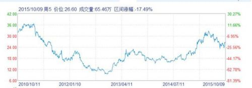
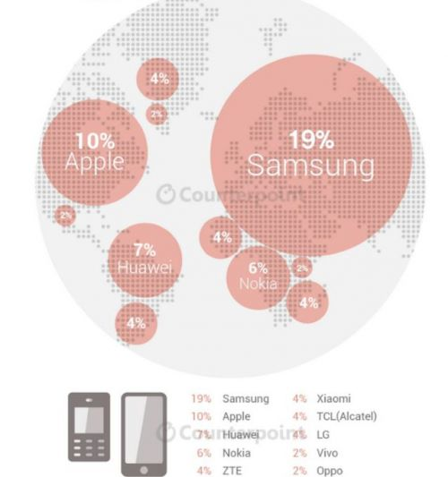
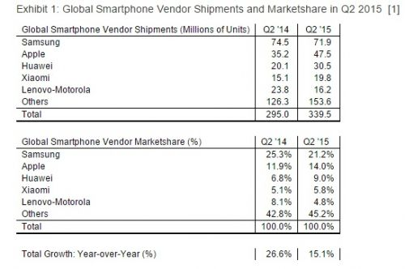

400-500-8888
时间：2016-04-21
文/蓝鲸TMT 老喵
唯物辩证法认为,新事物必定战胜旧事物,事物发展总趋势是前进的， 新事物的发展前途是光明的，全球市场上也正在上演着行业洗牌的故事。
近日，索尼总裁兼CEO平井一夫(Kazuo Hirai)对外表示，如果智能手机部门在下一财年无法实现盈利，则公司将为其考虑其他出路。 虽然索尼随后发布了声明，表示索尼不会退出手机业务，目前正在考虑转型，但是也难掩其尴尬的处境，昔日的索尼大法再也保不了平安。
手机业务：索尼头上的“达摩克里斯之剑”
三年前，索尼业务加速下滑，股价也跌到低点，之后在平井一夫的带领下，索尼削减成本支出，退出PC市场，收获了一定成效，正在逐渐复苏。不过，手机业务仍在拖整体的后腿。 根据索尼公司2015财年的第一季度财报数据来看， 其一季度总营收为1.81万亿日元 （148.2亿美元），与上年同期的1.8万亿日元基本持平，但其净利润达到了824亿日元（约41.2亿人民币），同比增长207%。相比较之下， 移动通讯业务销售收入为2,805亿日元（22.99亿美元），同比下降16.3%，亏损达到229亿日元。索尼目前预计，该业务的全年运营亏损将为600亿日元，差于今年4月时预计的亏损390亿日元。

一季度财报中，所有业务均有所增长，除了移动业务，这也让其成为了索尼头上的“达摩克里斯之剑”，很大程度上导致了索尼股价在随后的一段时间内的大幅度下跌。根据索尼2014年公布的数据显示，索尼智能手机在其主场日本大本营的市场份额仅有17.5%，在北美市场更是不足1%。 同时，Communities Dominate Brands公布的全球手机销量排行榜上，索尼更是被新型的国产手机厂商挤到前十名之外。面对扶不起的手机业务，也难怪平井一夫萌生废弃手机业务的想法。
不是个案，黑莓也将舍弃手机业务
在人们为索尼感叹的同时，又一家过去的手机巨头黑莓也来“掺和”一下。根据《Re/Code》报导，黑莓CEO程守宗(John Chen)在Code/Mobile大会中表示，会再给手机业务一年的时间，如果再不盈利，可能就会考虑放弃手机业务。 而在9月底，这位CEO还充满希望地表示用“安全+安卓”帮黑莓打胜仗。
根据美国知名的统计、互联网流量跟踪分析和市场调研公司comScore发布的数据显示，黑莓在全球智能手机操作平台所占的市场份额从2011年7月的21.7%下跌到了而今1%都不到， 还不及Windows Phone。而在2006年，黑莓在美国的市场占有率高达48%。同时，与2009年相比，黑莓的母公司RIM的市值已经蒸发了90%。这是继诺基亚之后，又一个令人感伤的品牌。虽然说没死，但是也已经奄奄一息了。
传统巨头手机之殇
索尼和黑莓目前尴尬的境地不是一天两天形成的，之前的诺基亚贱卖给微软就已经为传统手机巨头品牌敲响了警钟。前几年，智能手机快速发展，像三星、HTC和苹果等厂商抓住了用户需求，各有自己的特色，在市场上占据了一定的地位，不断成长为巨头企业。不过，好景不长，诺基亚、摩托罗拉被收购，HTC被唱衰，股价大幅下跌，虽说也在转型，但也在垂死的边缘。三星依靠着厚实的家底，领先的芯片技术和大量的订单，巨额的广告投入， 勉强占据着全球手机榜首的位置，不过随时都有可能被超越的危险。短短的一两年时间，那么多熟悉的品牌陨落，这背后发生了什么，又有哪些原因呢？
第一：以华为、小米为代表的国产手机的冲击。小米、华为等手机厂商的快速发展，以其高性价比不断俘获着消费者的心。同时，也彻底改变了整个手机市场的发展。根据最新的数据显示，在二季度全球手机出货量上，国产手机品牌占据六席之多。

目前来看，在高端手机市场，苹果已经呈现出一家独大的场面，三星也难以招架的住。而在中端以下手机市场，多家国产手机品牌以高配置、低售价使得索尼、HTC等品牌处于一个高不成、低不就的尴尬地位。虽然这些品牌在设计和研发上都较胜一筹，但消费者更多看重的还是价格。同时，加上国产品牌在设计和研发上的不断进步，更是对三星、HTC等厂商造成了巨大的冲击。
第二：传统巨头顽固不化。物竞天择，适者生存， 手机圈也是一样。时代在进步，而你不能在原地停留，始终不愿低头的传统品牌正一步步将自己逼入绝境。诺基亚时代的结束不是一个偶然，HTC、索尼等厂商的没落也是自食其果。高端市场利益空间巨大，但在苹果独大的情况下，分得一杯羹谈何容易。
根据数据显示，在全球手机市场最大的中国，中端以及市场份额接近80%，几乎被小米、华为、魅族、酷派等手机厂商占据。虽然HTC和三星等也都在逐渐布局中低端市场，但是依旧保持高姿态，相同价格下，配置大不如国产品牌，又谈何复苏呢？
第三：手机市场增速减缓。调研公司Strategy Analytics近日发布的最新报告显示，2015年第二季度全球智能手机共出货3.4亿部，同比增长15%，这是智能手机市场六年来的最低增幅。

智能手机在美国、欧洲和中国等主要市场的渗透率达到较高程度，增速也在逐渐减缓，不仅是对新兴品牌造成了影响，传统手机巨头的日子也更加难过，未来智能手机市场需要更多创新来推动增长。在公开场合，包括华为余承东、联想杨元庆等多位高管都表示，未来手机厂商将只会剩下两三家，洗牌速度将加快。
写在最后：
随着技术以及互联网发展的深入，手机将不仅仅作为一个通讯工具，未来会承载更多的入口，最后能够生存下来的也将会是迎合市场发展和具有创新精神的品牌。可以预计的是，未来依旧会有更多品牌入局手机市场，也会有更多的我们熟知的品牌说再见。传统手机巨头的尴尬处境，折射出的是其不能适应市场、不愿改变的悲哀，下一个诺基亚又会是谁呢？
Copyright © 2015-2016 Maker Cloud 创客云 版权所有粤ICP备32852599-1


 在线咨询
在线咨询 在线咨询
在线咨询 400-500-8888
400-500-8888